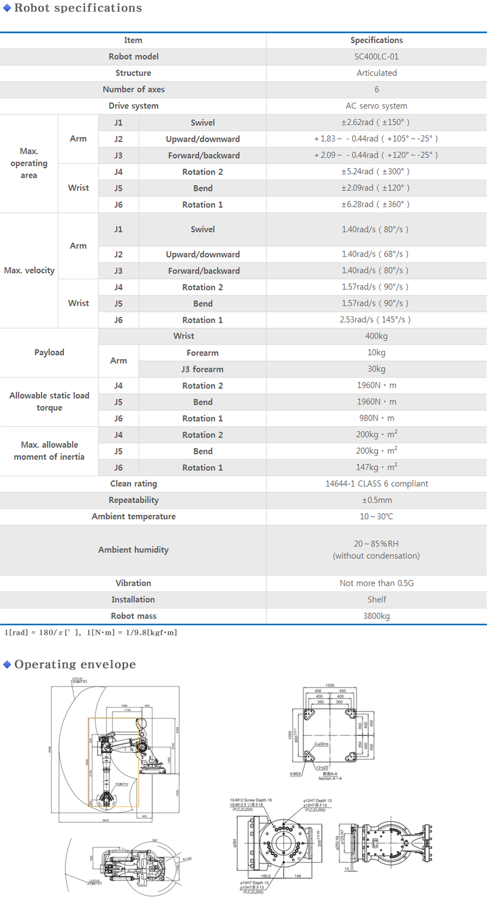
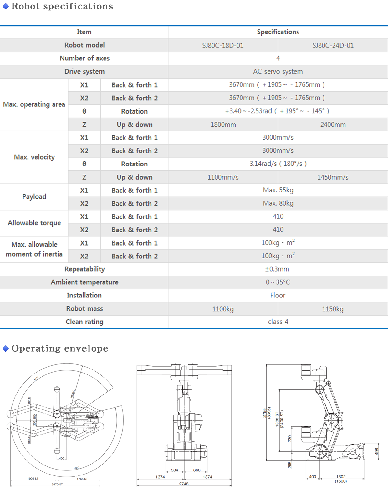
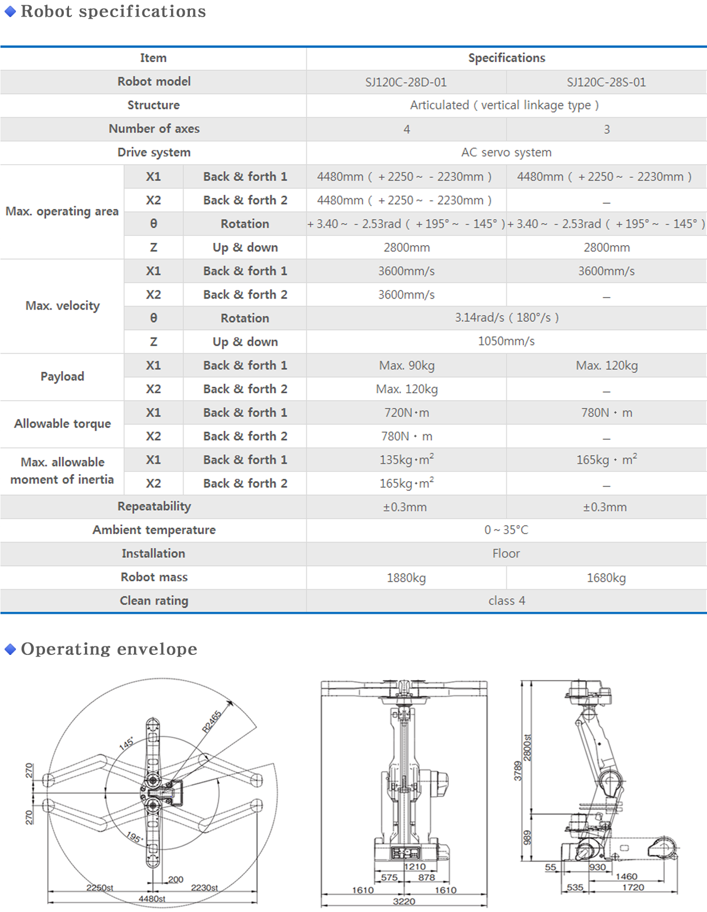
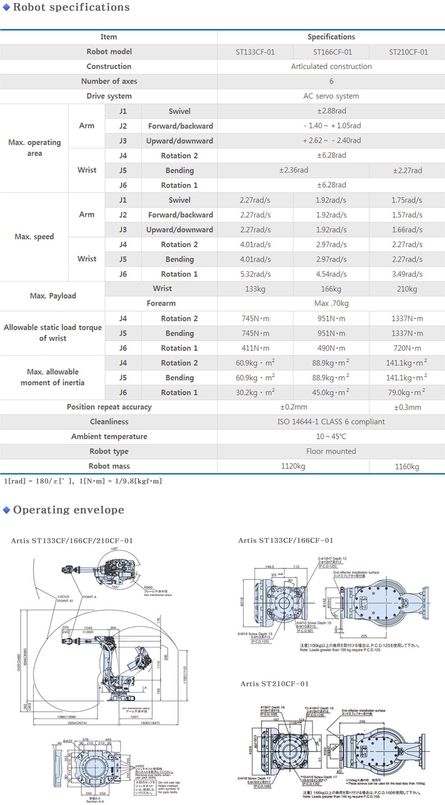

SJ80C-18D/24D
SJ120C-28D/28S
ST133CF/166CF/210CF-01
SC400LC
Flexible transfer with its 6 axes structure.
• Picking up vertically, rotation, and any other transfer is possible
Powerful payload with Large envelope.
• Enough arm length and envelope to transfer the 10th generation glass substrate Max. reach 3.6m, Up/Down envelope 4.8m
specifications

SJ80C-18D/24D
Suitable for 7th generation glass substrates
• Loading capability of 80 kg/280 Nm/40 kgm2 suitable
• for 2200 x 2000 substrates (LCD)
3670 mm long stroke for horizontal movement
Fastest swivel axis and quickest back and forth axis in its class
• Production lines for 7th generation glass substrates can realize, short cycle times nearly equal to 5th generarion glass substrate lines
Unique linkage structure applied to up and down axis
• High-rigidity structure for minimizing flexure and vibration
• Belt-less structure ensures high reliability and safety
Moving cables are completely enclosed in the arm
• The enclosed design prevents particle generation and looks good too
Wide range of models in product series
• Double-arm (min. pass line height of 1125 mm)
• Single-arm (min. pass line height of 1065 mm)
• Up and down stroke: 2.4 m and 1.8 m
specifications

SJ120C-28D/28S
Suitable for 7th generation glass substrates
• Loading capability of 80 kg/280 Nm/40 kgm2 suitable
• for 2200 x 2000 substrates (LCD)
• 3670 mm long stroke for horizontal movement
Fastest swivel axis and quickest back and forth axis in its class
• Production lines for 7th generation glass substrates can realize, short cycle times nearly equal to 5th generarion glass substrate lines
Unique linkage structure applied to up and down axis
• High-rigidity structure for minimizing flexure and vibration
• Belt-less structure ensures high reliability and safety
Moving cables are completely enclosed in the arm
• The enclosed design prevents particle generation and looks good too
Wide range of models in product series
• Double-arm (min. pass line height of 1125 mm)
• Single-arm (min. pass line height of 1065 mm)
• Up and down stroke: 2.4 m and 1.8 m
specifications

ST133CF/166CF/210CF-01
Heavy loads
• Maximum payload up to 210 kg, perfect for handling large panels.
Improved maneuverability
• Faster with improved rigidity reduces cycle times and minimizes flexure and vibration.
Clean room compatible
• ISO class 6 clean room compatibility for operating in clean room environments.
Easy operation
• Teaching pendent with large LCD has color graphics that simplify and clarify operations to greatly reduce Robot Programming times.
specifications
